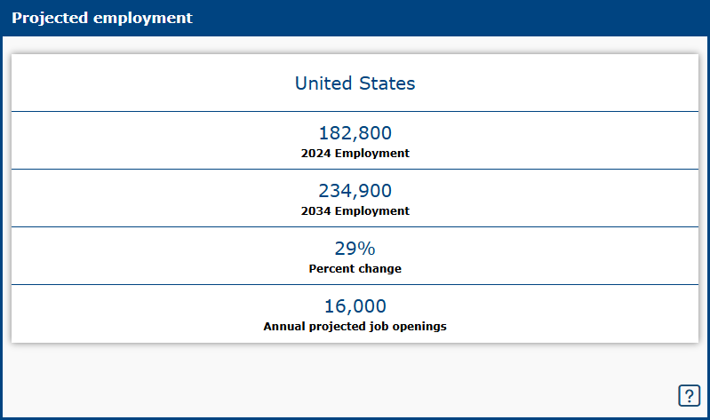
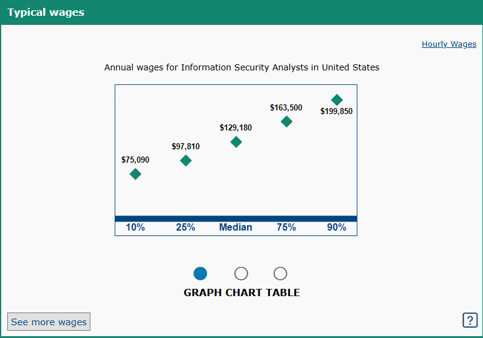

Projected Employment
Projected employment for Cyber Operations is expected to grow to about 29% in the United States. because organizations and governments are becoming increasingly dependent on digital systems while cyber threats are becoming more frequent and sophisticated, especially with the rise of Artificial Intelligence. AI can make cyberattacks more scalable and sophisticated, while also creating new tools for detecting and responding to threats. Ransomware, data breaches, espionage, and attacks on critical infrastructure are also increasing the need for defensive and offensive cyber capabilities.

Typical Wages
Cyber operations wages are generally competitive, with most people getting about $129,180 dollars annually, because the field requires specialized technical skills and there is strong demand for cybersecurity professionals. Salaries can vary depending on the specific job, level of experience, education, certifications, location, and employer. Entry-level positions may offer moderate wages, while experienced professionals working in areas such as cyber defense, penetration testing, security engineering, or incident response can earn significantly higher salaries. The combination of growing demand and specialized expertise contributes to strong earning potential in cyber operations.
